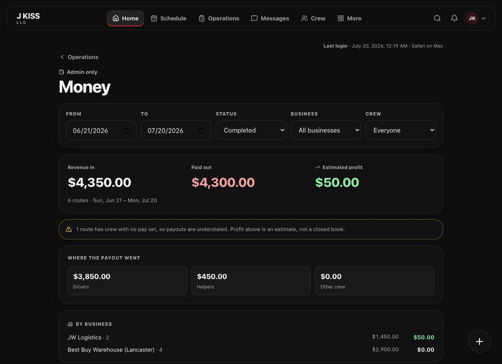
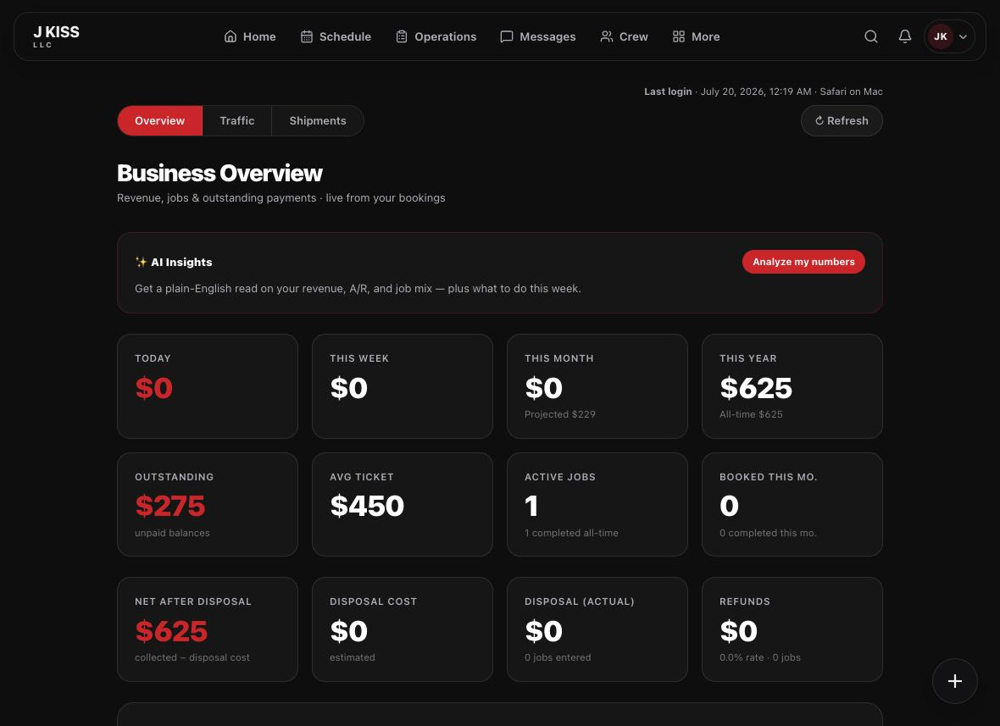
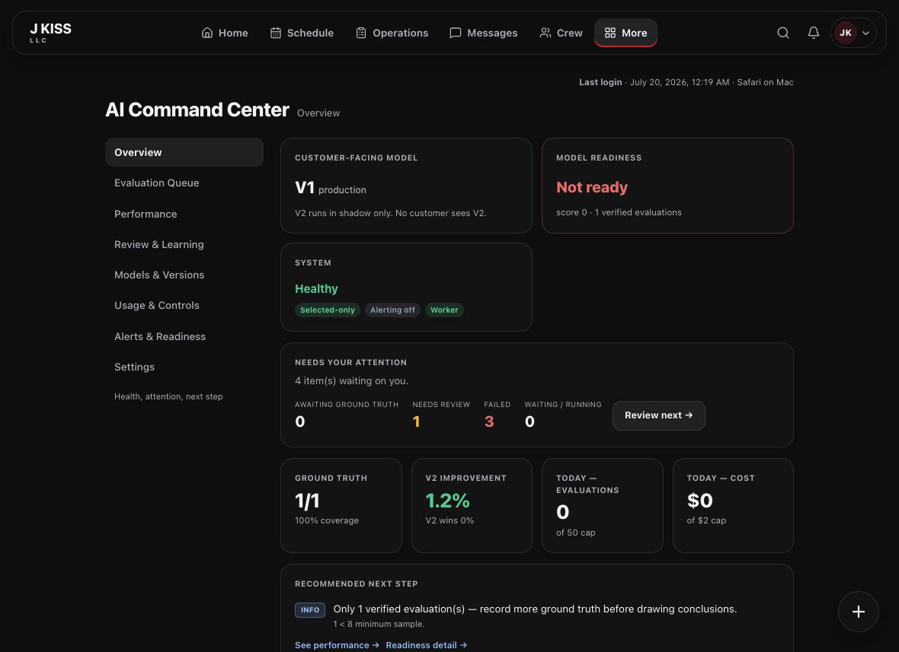
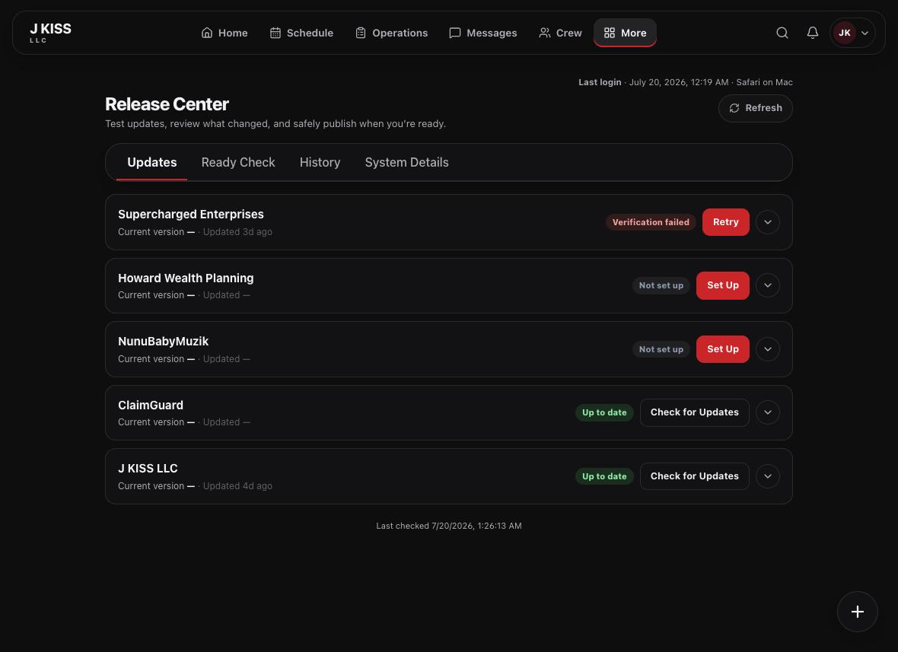

The five numbers that tell you how the business is really doing — and the controls only you should hold.
For business ownersHealth & growthRelease control
J KISS LLC · jkissllc.com
Edition 2026.07
How to read this guide
Run the business, not the busywork.
Your team handles the day-to-day. This guide is about the handful of things only an owner watches: the money, the trend, how well the AI is quoting, and the controls that change your live product. Five minutes here each morning keeps you ahead of everything.
Where your attention belongs
$
The money
Revenue in, payouts out, profit between — and what’s outstanding.
↗
The trend
Where revenue is going, by service, city, and month.
✦
The AI
How accurately Operion is quoting your jobs.
◆
Releases
Publishing and rolling back your live product — safely.
◑
Your portfolio
Every product you run, in one place.
◷
Your rhythm
A weekly and monthly cadence that scales.
1
The money
Revenue, payouts & profit
One screen answers the only financial question that matters day to day: are we making money on the work we’re doing?
Money

123
1
Revenue in — what the completed work billed.
2
Paid out — what your crews earned on it.
3
Estimated profit — the margin between, with an honest warning when a route is unpriced.
◱Filter to the truth. Narrow by date, business, or crew to see exactly where margin comes from. The payout split and per-business breakdown show which accounts actually pay.
⚠︎Watch the honesty line. When Operion says profit is an estimate because a route has unpriced crew, treat the number as a floor — set the missing pay so your books close cleanly.
2
The trend
Where the business is going
Analytics turns your bookings into an executive read: this week, this month, this year, and what’s still owed to you.
Business Overview

Revenue by period, outstanding balances, average ticket, and disposal economics — live from your bookings.
Watch
Why it matters
Act when…
Outstanding
Cash you’ve earned but not collected
It climbs faster than revenue
Average ticket
The health of your pricing
It slips month over month
Revenue by service / city
Where to focus marketing
One lane clearly outperforms
Projected month
Early warning on the month
Projection trails last month
✦Ask the numbers. The AI Insights panel gives a plain-English read on revenue, receivables, and job mix — a fast second opinion before a decision.
3
The AI
How well Operion is quoting
Operion quotes jobs from customer photos. The AI Command Center tells you, at a glance, whether it’s ready to trust and how accurate it’s getting.
AI Command Center

123
1
Live model — the customer-facing quoter; a newer version runs in shadow only.
2
Readiness — whether the shadow model has earned your trust yet.
3
Cost guardrail — today’s AI spend against a daily cap you control.
✳︎Two truths to hold. Customers only ever see the proven model, and your pricing rules — not the AI — always set the final number. The newer model proves itself quietly before it’s ever promoted.
4
The controls only you hold
Publishing & rollback
The Release Center is where you — and only you — push a new version of a product live, or safely return to the last good one. Every action takes a typed confirmation, so nothing happens by accident.
Release Center

Every product you run, with its status — up to date, needs setup, or needs attention — in one view.
Review what changed — files, risk, and rollback readiness — before anything goes live.
Approve by typing the exact confirmation phrase. This records intent; it publishes nothing.
Publish with a second typed phrase. Operion promotes the new version once, then verifies it’s healthy.
Roll back the same way if needed — one typed phrase restores the previous good version.
◆These are the only actions that change a live product. They’re owner-only by design, always previewable safely, and every step is logged. Reviewing is risk-free; publishing and rollback each require your typed confirmation.
Your cadence
The owner’s rhythm
Weekly · 15 minutes
Scan Money — profit trend and outstanding.
Glance at AI readiness and today’s AI cost.
Confirm invoices are going out on completed work.
Check any product marked needs attention in Release Center.
Monthly · 30 minutes
Review Analytics — revenue by service and city.
Compare projected vs. actual; adjust pricing if needed.
Review AI accuracy trend before trusting more automation.
Decide what to delegate vs. keep on your desk.
Own it vs. delegate it
You own
Your team runs
Publishing & rollback (typed confirmation)
Daily dispatch & the Book Now queue
Pricing strategy & margin targets
Confirming crews & completing jobs
Deciding when to trust more AI
Claims, pay statements & invoices
Portfolio & expansion
Customer messaging & reminders
💬Go deeper. Your administrators run everything day-to-day from the Operion Administrator Guide; new team members start with the Quick Start Guide.